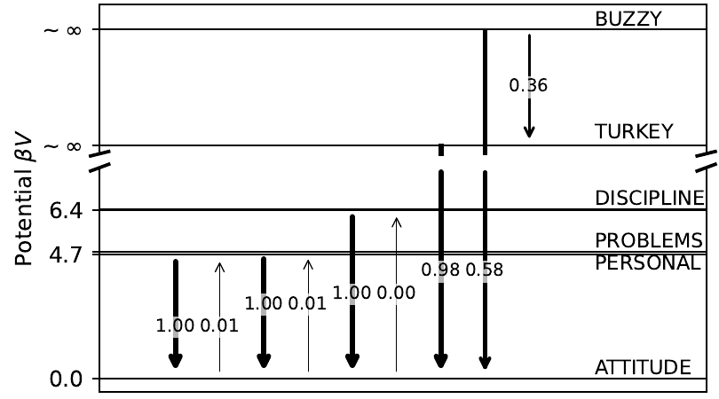

安全测试智能体从 8 个测试用例中选下一个；任意两个用例之间都能转移。A safety-testing agent picks the next of 8 test cases; any two cases are connected.
Potential emergence in LLM agents: a statistical physics perspective
后训练把 LLM 智能体的选择
组织成一个全局势能。
Post-training organises
LLM agents' choices along a potential.
把智能体状态作为中间变量，后训练就可以被测量和预言。状态空间上的一个配分函数，预言了状态转移怎样被组织成一个全局势能。
Treat agent states as intermediate variables, and post-training becomes measurable and predictable. One partition function on the state space predicts how transitions are organised into a global potential.
01 / 动机Motivation
智能体在状态之间选择，
这些选择顺着一个势能。
Agents choose between states,
and their choices follow a potential.
放进智能体框架后，语言模型的每一次输出都是一次状态转移：下一个要运行的测试，下一个推理步骤。前作在多种语言模型中测到，这些转移近似满足细致平衡，由一个全局势能主导。这个势能从哪里来？本文给出后训练这一机制，并定量检验。
Inside an agent framework, every output of a language model is a transition between states: the next test to run, the next reasoning step. Earlier work showed, across many language models, that these transitions nearly satisfy detailed balance and are governed by a global potential. Where does the potential come from? We give post-training as a mechanism and test it quantitatively.
按势能排列状态，转移几乎都指向低处Ordered by potential, transitions point almost always downhill

02 / 理论Theory
后训练如同退火：
温度越低，转移越受势能支配。
Post-training works like annealing:
the lower the temperature, the more a potential governs transitions.
在固定的状态空间上，KL 正则化后训练的理想结果，是把初始模型的转移按奖励做指数重加权。这正是统计物理里的配分函数：KL 系数 $\beta$ 是温度，负奖励是能量；每训练一轮，温度降低一级。
On a fixed state space, the ideal outcome of KL-regularised post-training reweights the initial model's transitions exponentially by reward. This is a partition function from statistical physics: the KL coefficient $\beta$ is a temperature and negative reward is an energy; each round of training lowers the temperature by one step.
$T_{ij}(\beta)=\dfrac{Q_{ij}\,e^{R_{ij}/\beta}}{Z_i(\beta)}$
$Q_{ij}$初始模型从状态 $i$ 转到 $j$ 的概率the initial model's probability of moving from $i$ to $j$
$R_{ij}$这次转移得到的奖励the reward of this transition
$\beta$温度：KL 正则的强度temperature: the strength of the KL penalty
$Z_i$配分函数，使每一行归一partition function, normalising each row
常见的奖励只看转移在哪里结束，与路径无关；这部分对所有来源相同，记为终点奖励 $u_j$。低温下，正反向转移之比由一个全局势能决定：Common rewards depend only on where a transition ends, not on the path; this part is the same for all sources and is written as the destination reward $u_j$. At low temperature the ratio of forward and reverse transitions is set by one global potential:
$\beta\log\dfrac{T_{ij}}{T_{ji}}\;\xrightarrow{\beta\to0}\;\Phi_i-\Phi_j$
$\Phi_i=-u_i-\max_{k\in\mathcal L(i)}u_k$
$u_i$停在状态 $i$ 的奖励the reward for ending at state $i$
$\max_{k\in\mathcal L(i)} u_k$从 $i$ 一步能到的最高奖励the highest reward reachable from $i$ in one step
语义粗粒化的详细推导过程Detailed derivation of semantic coarse-graining
链式分解Chain-rule decomposition
将轨迹拆成目标状态和状态内的条件分布，token级 KL 分解为：Split a trajectory into its target state and its within-state conditional distribution. The token-level KL decomposes as:
$$D_{\mathrm{KL}}(p_i\Vert p_{\mathrm{ref},i})=D_{\mathrm{KL}}(T_i\Vert Q_i)+\sum_jT_{ij}D_{\mathrm{KL}}(p_i(\cdot\mid s_i(y)=j)\Vert p_{\mathrm{ref},i}(\cdot\mid s_i(y)=j))$$
根据 Gibbs 不等式，每个条件 KL 非负：By Gibbs' inequality, every conditional KL is non-negative:
$$D_{\mathrm{KL}}(p_i(\cdot\mid s_i(y)=j)\Vert p_{\mathrm{ref},i}(\cdot\mid s_i(y)=j))\ge0\quad\Longrightarrow\quad D_{\mathrm{KL}}(p_i\Vert p_{\mathrm{ref},i})\ge D_{\mathrm{KL}}(T_i\Vert Q_i)$$
当且仅当每个有概率的语义类内部训练与参考条件分布相同时取等号。Equality holds if and only if the trained and reference conditional distributions agree within every semantic class with non-zero probability.
语义 KL 散度Semantic KL divergence
固定来源 $i$，记训练分布为 $p_i(y)=p_\theta(y\mid x_i)$，参考分布为 $p_{\mathrm{ref},i}(y)=p_{\mathrm{ref}}(y\mid x_i)$。按解析规则将输出归入目的状态 $j$，得到：For a fixed source $i$, let the trained distribution be $p_i(y)=p_\theta(y\mid x_i)$ and the reference distribution be $p_{\mathrm{ref},i}(y)=p_{\mathrm{ref}}(y\mid x_i)$. Apply the parser to assign each output to target $j$:
$$D_{\mathrm{KL}}(T_i\Vert Q_i)\equiv\sum_jT_{ij}\log\frac{T_{ij}}{Q_{ij}}$$
这个 KL 比较目的状态的概率；同一状态内部不同轨迹的差异由条件 KL 描述。This KL compares target-state probabilities. The conditional KL describes differences between trajectories within one state.
语义奖励Semantic reward
若同一语义类共享奖励 $r_i(y)=R_{ij}$：If all trajectories in one semantic class share reward $r_i(y)=R_{ij}$:
$$\mathbb{E}_{p}[r_i]=\sum_jT_{ij}R_{ij}$$
粗粒化的训练过程Coarse-grained training
固定语义映射与可达状态，并假设类内条件分布保持参考策略。此时含 KL 的后训练可写成逐行的状态级优化：Fix the semantic map and the reachable states. Assume that the conditional distribution within each class remains that of the reference policy. Post-training with KL regularization can then be written as a state-level optimization for each row:
$$T_i^*=\operatorname*{arg\,max}_{T_i\ge0,\,\sum_j T_{ij}=1}\left\{\sum_jT_{ij}R_{ij}-\beta D_{\mathrm{KL}}(T_i\Vert Q_i)\right\}$$
对行归一化约束求解并消去拉格朗日乘子，即得上方的指数重加权。真实训练还可能改变参考策略、状态内轨迹分布、可达状态和状态空间。Solve the row-normalization constraint and remove the Lagrange multiplier. This gives the exponential reweighting above. Real training can also change the reference policy, the within-state trajectory distribution, the reachable states, and the state space.
低温极限的推导Derivation of the low-temperature limits
1. 用参考核展开转移核1. Expand the transition kernel with the reference kernel
$$\frac{T_{ij}(\beta)}{T_{ji}(\beta)}=\frac{Q_{ij}}{Q_{ji}}\exp\left(\frac{R_{ij}-R_{ji}}{\beta}\right)\frac{Z_j(\beta)}{Z_i(\beta)}$$
$$y_{ij}(\beta)=\log\frac{Q_{ij}}{Q_{ji}}+\frac{R_{ij}-R_{ji}}{\beta}-\log Z_i(\beta)+\log Z_j(\beta)$$
2. 代入奖励分解，并将行项在归一化中抵消2. Insert the reward decomposition and cancel the row term in normalization
由 $R_{ij}=h_i+u_j+\epsilon_{ij}$，反向边的奖励差为：From $R_{ij}=h_i+u_j+\epsilon_{ij}$, the reverse-edge reward difference is:
$$R_{ij}-R_{ji}=(h_i-h_j)+(u_j-u_i)+(\epsilon_{ij}-\epsilon_{ji})$$
把每一行的共同因子提出配分函数，定义 $Z_i^{(0)}(\beta)\equiv e^{-h_i/\beta}Z_i(\beta)$：Factor the common factor in each row out of the partition function. Define $Z_i^{(0)}(\beta)\equiv e^{-h_i/\beta}Z_i(\beta)$:
$$y_{ij}(\beta)=\log\frac{Q_{ij}}{Q_{ji}}+\frac{u_j-u_i+\epsilon_{ij}-\epsilon_{ji}}{\beta}-\log Z_i^{(0)}(\beta)+\log Z_j^{(0)}(\beta)$$
$u_j-u_i$ 与配分函数的节点差属于可积方向；$\epsilon_{ij}-\epsilon_{ji}$ 是逐边残差方向。The node differences $u_j-u_i$ and the partition-function node difference are integrable. $\epsilon_{ij}-\epsilon_{ji}$ is the edge-residual direction.
3. 作用量的一阶条件定义 $\phi$3. The first-order condition of the action defines $\phi$
$\phi$ 不是从单个转移反推，而是让整张转移概率场的作用量最小。对约束 $\sum_i\phi_i=0$ 的拉格朗日问题求导，对每个节点 $k$ 得到：The potential $\phi$ is not inferred from one transition. It minimizes the action of the complete transition-probability field. Differentiate the constrained Lagrangian with $\sum_i\phi_i=0$ for each node $k$:
$$\frac{\partial\mathcal{S}}{\partial\phi_k}=\frac{1}{2N}\left[\sum_iT_{ik}e^{(\phi_k-\phi_i)/2}-\sum_jT_{kj}e^{(\phi_j-\phi_k)/2}\right]=0$$
这组节点方程寻找一个全局 $\phi$，使进入 $k$ 的加权通量与离开 $k$ 的加权通量平衡。These node equations find one global $\phi$. They balance weighted inflow and outflow at node $k$.
4. 从微观转移概率场给出可观测量4. Observables from the microscopic transition field
取每个同时存在正、逆转移的状态对各一次，组成互反边集 $E$。作用量从完整转移场给出节点势差 $\Delta\phi_{ij}$。把边方向场 $y_{ij}$ 作最小二乘投影到节点差空间，记可积部分为 $g_{ij}=\psi_i-\psi_j$，正交剩余为无法由任何全局节点函数解释的环流残差 $\eta_{ij}$。Take each state pair with both forward and reverse transitions once. This gives the reciprocal-edge set $E$. The action gives the node potential difference $\Delta\phi_{ij}$. Project the edge direction field $y_{ij}$ by least squares onto node differences. The integrable part is $g_{ij}=\psi_i-\psi_j$; the orthogonal remainder, which no global node function can explain, is the circulation residual $\eta_{ij}$.
在最小二乘投影和渐近拟合所用的对齐近似下，实测相关可以因子化为：Under the least-squares projection and the alignment approximation used for the asymptotic fit, the measured correlation can be factorized as:
$$\tilde{y}_{ij}=g_{ij}+\eta_{ij},\quad\langle g,\eta\rangle_E=0,\quad r(\beta)\approx\operatorname{corr}_E(\Delta\phi_{ij}(\beta),y_{ij}(\beta))=\operatorname{corr}_E(\Delta\phi,g)\,r_{\Pi}(\beta)=\operatorname{corr}_E(\Delta\phi,g) \operatorname{corr}_E(g,y)$$
5. 含逐边残差的奖励5. Rewards with an edge residual
先保留逐边残差 $\epsilon_{ij}$，它能沿闭合回路留下不能写成节点差的方向。把这部分相对方差记为 $\kappa$，得到：Keep the edge residual $\epsilon_{ij}$. It can leave a direction around a closed loop that cannot be written as a node difference. Let $\kappa$ be its relative variance:
$$r(\beta)\approx\frac{1}{\sqrt{1+\kappa+\theta\beta^2}}\to\frac{1}{\sqrt{1+\kappa}}\quad(\beta\to0)$$
随机逐边结构不会保证在 $\beta$ 下降时形成全局可积势；它会留下边级背景或环流，因此在这个极限中 $r$ 仍受 $\kappa$ 压低。A random edge structure does not guarantee a globally integrable potential as $\beta$ decreases. It leaves an edge-level background or circulation, so $r$ remains reduced by $\kappa$ in this limit.
6. 共享终点奖励6. Shared destination rewards
令 $\epsilon_{ij}=0$。此时 $y$ 中唯一不能写成节点差的部分，是参考亲和度 $\log(Q_{ij}/Q_{ji})$ 的不可积分量；它在 $\beta y$ 中以 $\beta$ 倍出现，相对方差记为 $\theta\beta^2$，所以低温下 $r\to1$：Set $\epsilon_{ij}=0$. The only part of $y$ that is not a node difference is then the non-integrable part of the reference affinity $\log(Q_{ij}/Q_{ji})$; it enters $\beta y$ multiplied by $\beta$, with relative variance $\theta\beta^2$, so $r\to1$ at low temperature:
$$\frac{\operatorname{Var}_E(\eta)}{\operatorname{Var}_E(g)}\approx\theta\beta^2\quad\Longrightarrow\quad r(\beta)\approx\frac{1}{\sqrt{1+\theta\beta^2}}\to1\quad(\beta\to0)$$
7. 低温下的势能7. The potential at low temperature
在上面的可积核中，把邻域贡献写成：For the integrable kernel above, write the neighborhood contribution as:
$$m_i(\beta)=\beta\log\sum_{k:Q_{ik}>0}Q_{ik}e^{u_k/\beta},\quad m_i(\beta)\to m_i=\max_{k:Q_{ik}>0}u_k$$
低温下的势能写成：At low temperature the potential is:
$$\tilde{\phi}_i(\beta)=-\frac{\tilde{u}_i+\tilde{m}_i(\beta)}{\beta}+O(1),\quad\beta\to0$$
$$\beta\tilde{\phi}_i\to-(\tilde{u}_i+\tilde{m}_i)$$
即正文中的 $\Phi_i=-u_i-\max_{k\in\mathcal L(i)}u_k$（去掉均值）：低温下的势能只由状态自身的奖励和一步可达的最高奖励决定。This is $\Phi_i=-u_i-\max_{k\in\mathcal L(i)}u_k$ of the main text, centred: at low temperature the potential is set only by the state's own reward and the highest reward reachable in one step.
8. 奖励与熵的共同修正8. The shared correction of reward and entropy
对每个来源状态等权平均，理论读数直接从状态级转移分布 $T(\beta)$ 计算：Take the equal-weight average over source states. Compute both theoretical observables directly from the state-level transition distribution $T(\beta)$:
$$H(\beta)=-\frac{1}{N}\sum_i\sum_jT_{ij}(\beta)\log T_{ij}(\beta),\quad\bar{R}(\beta)=\frac{1}{N}\sum_i\sum_jT_{ij}(\beta)u_j$$
在充分后训练的近似下，两条曲线共享指数尾部；每个任务的 $H$ 与 $R$ 共用 $A,\Delta$：Under the full post-training approximation, both curves share one exponential tail. Each task uses the same $A,\Delta$ for $H$ and $R$:
$$\bar{R}(\beta)=R_{\max}-Ae^{-\Delta/\beta},\quad H(\beta)=H_*+\frac{A}{\beta}e^{-\Delta/\beta}+O(e^{-\Delta/\beta})$$
$R_{\max}$ 是最高奖励，$\Delta$ 是最高与次高奖励之差，$A$ 是次优终点的总权重，$H_*$ 是参考核在最高奖励终点之间归一化后的熵。$R_{\max}$ is the highest reward, $\Delta$ the gap between the highest and second-highest rewards, $A$ the total weight of the next-best destinations, and $H_*$ the entropy of the reference kernel normalised among the highest-reward destinations.
03 / 实验Experiment
在两个智能体任务中，
势能结构随后训练增强。
In two agent tasks,
post-training strengthens the potential.
两个任务都从 Qwen3.5-9B 出发训练 8 轮，每轮把智能体反复放回各个状态，统计它的去向。第 $m$ 轮的名义温度是 $\beta_0/m$；每个任务用一个因子换算为有效温度 $\beta_{\rm eff}=c\,\beta_0/m$，T1 的 $c=3.04$，T2 的 $c=3.45$。
Both tasks start from Qwen3.5-9B and are trained for 8 rounds; in each round the agent is repeatedly reset to every state and its destinations are counted. Round $m$ has nominal temperature $\beta_0/m$; one factor per task gives the effective temperature $\beta_{\rm eff}=c\,\beta_0/m$, with $c=3.04$ for T1 and $3.45$ for T2.
解题智能体在一道导热题的 12 个检查点中选下一步；每步只能走到两侧各两个邻居。A problem-solving agent picks the next of 12 checkpoints of a heat-conduction problem; each step reaches two neighbours on either side.
随训练推进，转移愈加服从势能As training proceeds, transitions follow the potential more closely
只看初始模型，就能预言每条转移怎么变The initial model alone predicts how every transition changes
训练后的势能，与理论极限同向变化The trained potential varies with the theoretical limit across states
奖励与熵共用一个修正幅度，与配分函数一致Reward and entropy share one correction amplitude, consistent with the partition function
04 / 检验Tests
势能依赖奖励的结构，
换模型和推理方式依然成立。
The potential depends on the reward's structure
and holds across models and inference settings.
如果势能来自终点奖励的结构，破坏这个结构就应当削弱势能，而换模型、推理方式或提示不应改变结论。我们在 T1 上逐一检验，并改变训练的 KL 系数。
If the potential comes from the structure of the destination reward, breaking that structure should weaken it, while changing the model, the inference setting or the prompt should not change the conclusion. We test each on T1, and also vary the KL coefficient of training.
奖励仍在上升，势能结构却减弱Reward still rises, but the potential weakens
换推理方式、模型和提示，势能结构依然增强Across inference settings, models and prompts, the potential still strengthens
八个 KL 系数，落在主实验曲线附近Eight KL coefficients lie near the main-experiment curve
05 / 讨论Discussion
下一步：
更真实的状态，更完整的动力学。
Next:
more realistic states, fuller dynamics.
当语料统计与人类偏好不足以解释智能体的行为时，奖励结构、参考分布和推理条件可以作为机制线索，并可能用来指导训练。要走向更真实的智能体，还有三个问题。
Where corpus statistics and human preferences fall short of explaining agent behaviour, the reward structure, the reference distribution and the inference conditions serve as mechanistic clues and could inform training. Three questions remain on the way to more realistic agents.
状态从哪里来Where states come from
这里的状态是预先定义的有限输出。真实场景中的状态可能是抽象的检查点、执行日志或连续的多模态观测，如何定义它们、如何把奖励写到状态之间，仍是难题。Here states are predefined, finite outputs. In real settings they may be abstract checkpoints, execution logs or continuous multimodal observations; how to define them and write rewards between them remains open.
能否走到新的区域Reaching new regions
后训练重新分配已有转移的概率。它能否让模型走到原来几乎不去的状态，是改变已有行为与获得新行为之间的区别。Post-training redistributes probability among existing transitions. Whether it lets a model reach states it almost never visited marks the line between changing existing behaviour and acquiring new behaviour.
训练不在平衡态Training is out of equilibrium
配分函数给出平衡参照，校准因子 $c$ 刻画实际训练离理想最优有多远，但还不描述完整的非平衡动力学。The partition function gives an equilibrium reference, and the calibration factor $c$ measures how far real training is from the ideal optimum, but the full non-equilibrium dynamics remain to be described.